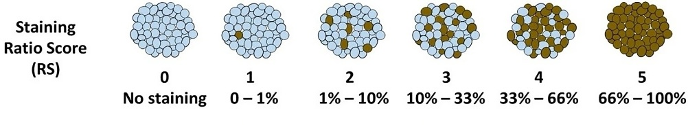

Quando pensamos em um projeto de tecnologia hoje...
...é quase automático imaginar que existe um LLM em algum lugar, não é?
2026
Hype de IA generativa, agentes e aplicações com LLMs.
2018*
O ano em que começou a história do algoritmo deste projeto.
E se eu disser que o algoritmo principal não usa LLMs?
Somente pelo scholar temos +17k resultados com as palavras-chave: "Immunohistochemistry" AND "Breast Cancer" AND ("Cell Counting" OR "Nuclei Detection" OR "Automated Quantification" OR "Allred Score") AND ("Software" OR "Framework" OR "Tool")
10 · A origem
Tudo começou com um problema real
Na análise de câncer de mama, a imuno-histoquímica ajuda a avaliar biomarcadores importantes para decisões terapêuticas.
O cenário
Quantificação de receptores hormonais, como ER e PR.
Análise tradicional frequentemente manual.
Subjetividade e reprodutibilidade são desafios.
A oportunidade
Usar processamento de imagens para apoiar a análise.
Investigar alternativas de menor custo.
aproximar tecnologia e rotina de patologia.
11 · Entendendo a imagem
O que é imuno-histoquímica?
É uma técnica que usa marcadores para revelar proteínas específicas no tecido. Na análise do câncer de mama, por exemplo, ajuda a observar biomarcadores como ER e PR.

[images/allred_score.jpeg]
O Escore de Allred combina proporção e intensidade da coloração.
12 · O problema
Digitalizar uma lâmina inteira ainda pode exigir um investimento muito alto
Hoje, scanners WSI especializados capturam a lâmina inteira para visualização digital.
US$ 100 mil – US$ 400 mil
Cada WSI pode ter na casa de Giga-pixels.
Estimativa para um scanner WSI de alta capacidade (>100 lâminas).
8
Soluções completas para usuário final
A revisão encontrou 1.246 registros iniciais
Além do scanner: armazenamento, infraestrutura de TI, software, manutenção e suporte.
Precisamos de toda essa infraestrutura para começar?
13 · A solução
Uma arquitetura de baixo custo: Mobile + Cloud
A soluçãopropõe uma arquitetura que integra captura por smartphone, processamento em nuvem e visualização dos resultados em ambiente web/aplicativo.
Microscópio + smartphone→Aplicativo→Serviços em nuvem→Máscaras e resultados
14 · A comparação
Não foi uma disputa entre “IA” e “não IA”
A pesquisa implementou e comparou três abordagens para segmentação nuclear:
Método clássico
Limiarização adaptativa
Processamento de imagem tradicional.
Método estatístico
Distância de Mahalanobis
Com expansão polinomial.
Deep Learning
Faster R-CNN
Abordagem baseada em aprendizado profundo.
A pergunta não era qual tecnologia está na moda, mas qual funciona melhor para o problema.
15 · Os pontos fortes
Cada método tem uma vantagem diferente
Processamento clássico
Leve e simples de integrar
Exige menos processamento e ajudou a validar o fluxo completo do aplicativo à nuvem.
Mahalanobis
Equilíbrio sem GPU dedicada
Uma opção intermediária para separar células sem exigir hardware especializado.
Deep Learning
Mais robusto às variações
Lidou melhor com células de formatos diferentes e reduziu marcações incorretas.
O melhor caminho depende do problema e dos recursos disponíveis.
16 · A IA generativa entra em cena
O algoritmo não usa LLMs. A pesquisa teve apoio de IA.
Onde a IA generativa ajudou
Explorar e compreender conceitos.
Apoiar a organização e revisão de textos.
Ajudar em tarefas de programação e documentação, se aplicável.
Onde exige cuidado
Conferir referências e afirmações.
Não delegar avaliação científica à ferramenta.
Preservar autoria, responsabilidade e rastreabilidade.
Personalizar com exemplos verdadeiros das ferramentas e usos que você realmente fez durante o mestrado.
17 · O próximo passo
Quer descobrir o que está sendo priorizado?
Editais públicos podem dar pistas sobre problemas que governos e instituições querem ajudar a resolver.
Acompanhe
FAPESC, Finep, CNPq e fundações estaduais publicam chamadas de pesquisa e inovação.
Observe os temas
Chamadas recentes incluem saúde, educação, energia, segurança pública e desenvolvimento tecnológico.
Leia as regras
Confira quem pode participar e se o apoio é para pesquisa, bolsas ou desenvolvimento de projetos.
Editais também mostram quais problemas estão mobilizando recursos.
 [IMAGEM COM DETECÇÕES: images/Screenshot 2026-11-16 at 22.53.48.png]
[IMAGEM COM DETECÇÕES: images/Screenshot 2026-11-16 at 22.53.48.png]